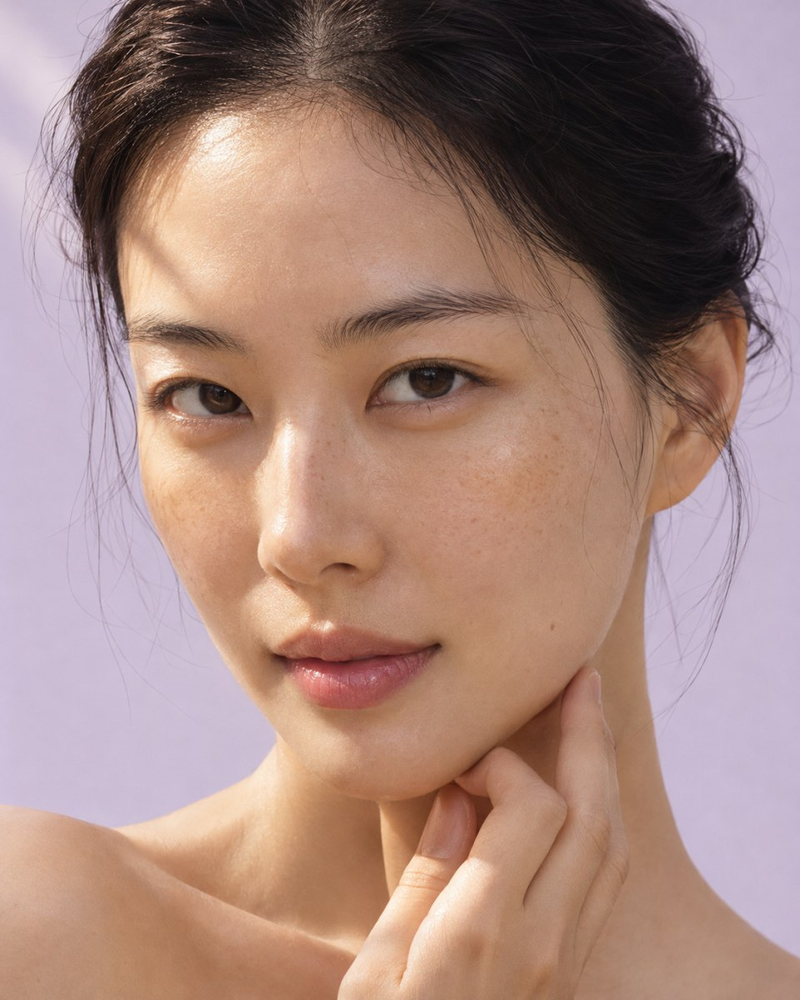

PERSONAL SKINCARE
오늘 내 피부에
필요한 루틴
세안 후 당김부터 오후의 번들거림까지.
피부 고민에 맞는 성분과 아침·저녁 루틴을 찾아보세요.

테스트 진행 방법
- 01
사진 추가 선택
조명과 사진 중앙의 색감을 살펴봐요.
- 02
피부 고민 체크
최근 2주간 느낀 피부 상태에 답해요.
- 03
루틴 확인
추천 성분과 아침·저녁 순서를 확인해요.
THE SKIN CHECK
내 루틴 찾기
- 1 사진
- 2 설문
- 3 루틴
얼굴 사진을 추가해 주세요
자연광에서 필터를 끄고 정면을 찍어 주세요. 사진을 선택한 뒤 얼굴이 타원 안에 들어오는지 확인해 주세요.
JPG, PNG, WebP · 최대 10 MB
사진은 기기에서만 처리하고 서버에 전송하거나 저장하지 않아요.
FAQ
자주 묻는 질문
사진 없이도 추천을 받을 수 있나요?
네. 사진 중앙의 밝기와 색감은 참고 정보로 표시해요. 피부 관리 루틴과 성분은 설문 응답을 바탕으로 추천합니다.
선택한 사진은 어디에 남나요?
사진은 기기에서만 처리돼요. 서버 전송이나 저장 없이 밝기와 색감을 확인하고, 결과를 확인하면 사진 데이터는 화면에서 지워집니다.
추천 루틴을 어떻게 써 보면 좋나요?
아침·저녁으로 나눠 적힌 순서를 참고하고, 횟수는 제품의 사용법을 우선해 주세요. 새 제품은 작은 부위부터 사용해 보세요.